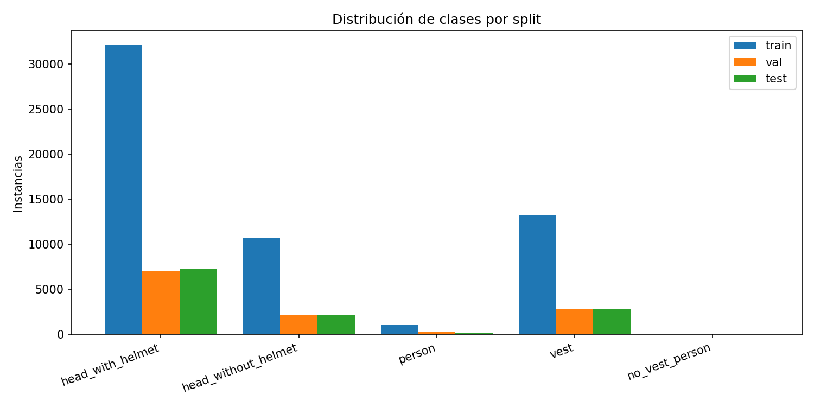
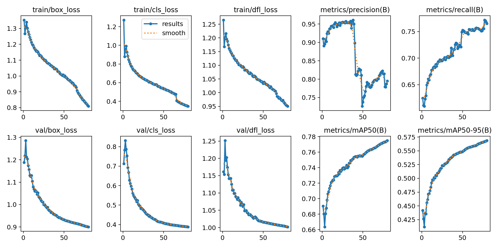
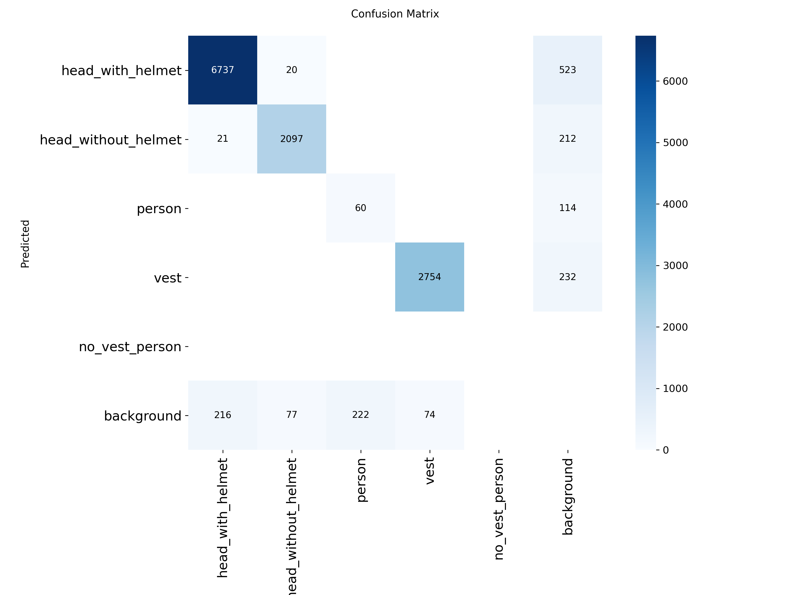
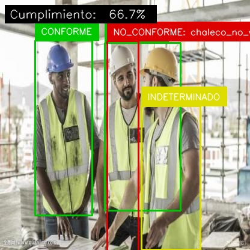
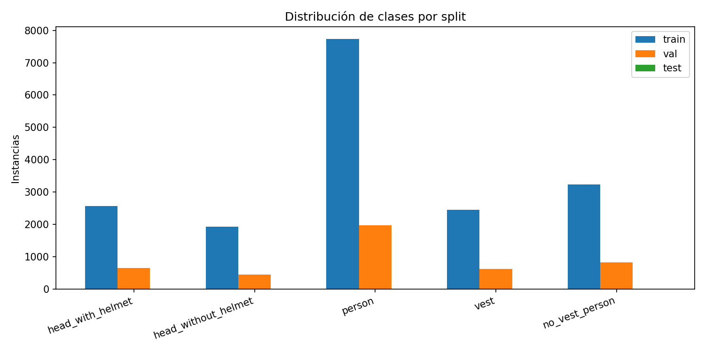
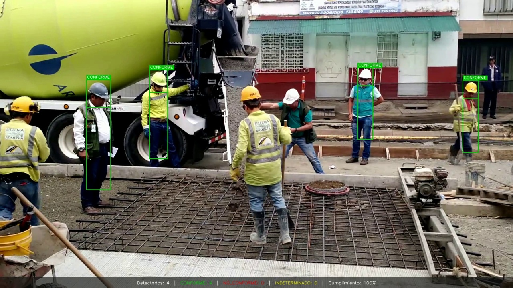
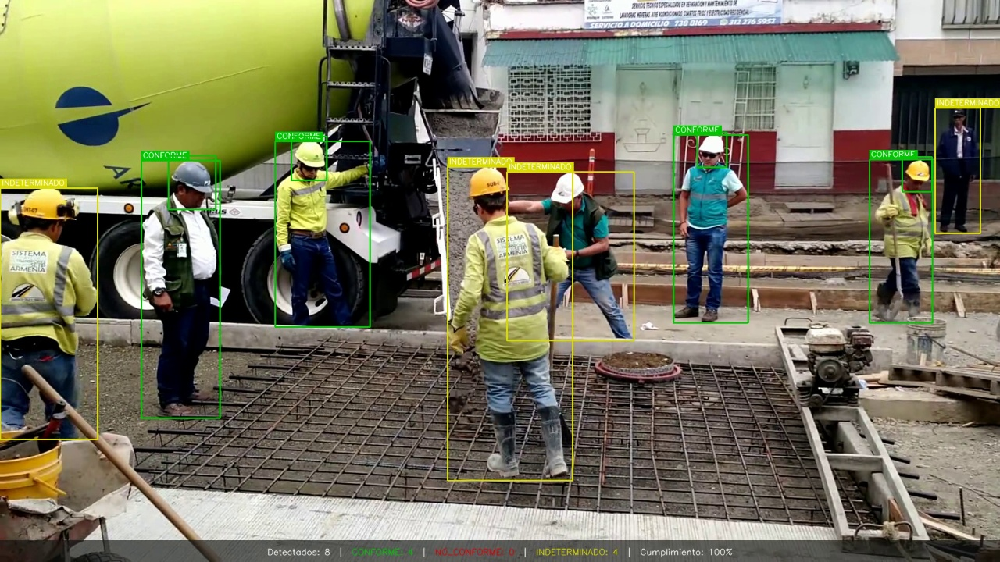
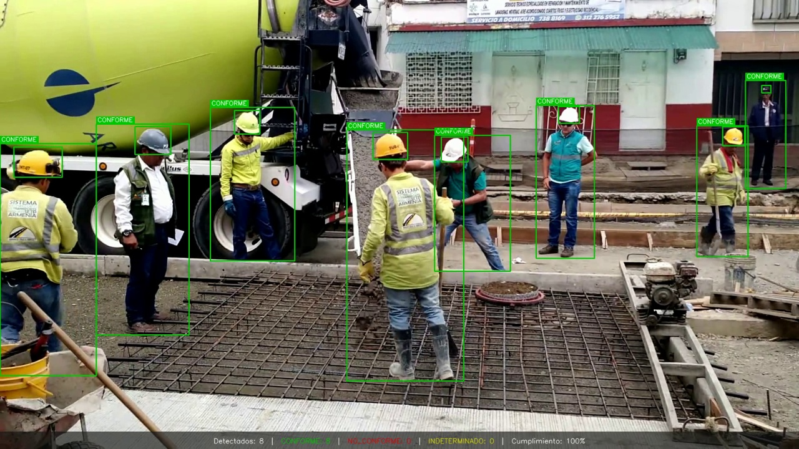
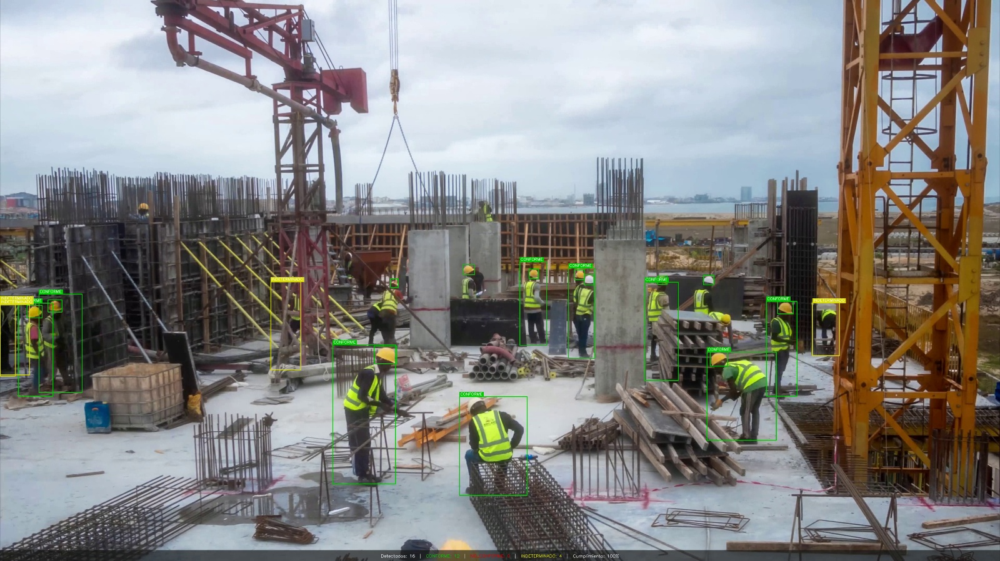

en Obras de Construcción con YOLOv8
y Verificación Determinista por Reglas
Jesús Percy Nazario Portilla
Parcial — Deep Learning aplicado a visión por computadora
github.com/PercyTechX/epp-yolo-compliance
Queremos que una cámara y un programa miren una obra de construcción y digan:
Sin necesidad de un supervisor mirando cámaras 8 horas seguidas.
Ventaja clave: si mañana cambian las reglas, modifico el verificador. No vuelvo a entrenar el modelo (eso son 7 horas de GPU).
YOLO = You Only Look Once.
Un modelo de deep learning entrenado para detectar objetos en imágenes en tiempo real.
Versión usada: YOLOv8s (Ultralytics) — ~11 millones de parámetros, balance entre velocidad y precisión.
| Dataset | Imágenes | Aporta |
|---|---|---|
| Hard Hat Workers (Northeastern Univ.) | 7.035 | Cabezas con/sin casco + person |
| Safety Helmet (lisa-group-de) | 7.035 | Cabezas con/sin casco + person |
| Safety Vest PPE | 11.906 | Chalecos reflectivos |
| Total | 25.976 | (Plus 2.719 de OtroEnfoque al final) |
Las descargué de Roboflow Universe. Las imágenes muestran obras reales de varios países, con sus propias etiquetas.
Cada dataset usa nombres diferentes (helmet vs hardhat vs safety-helmet). Lo primero fue traducir todo a una única taxonomía de 5 clases:
| id | Clase | Qué significa |
|---|---|---|
| 0 | head_with_helmet | Cabeza con casco |
| 1 | head_without_helmet | Cabeza sin casco |
| 2 | person | Cuerpo completo del trabajador |
| 3 | vest | Chaleco reflectivo |
| 4 | no_vest_person | Persona sin chaleco |

person tiene solo 1.116 instancias en train (2% del total). Esto va a darnos problemas más adelante.
Hice 3 entrenamientos:
close_mosaic=15 → afinar el modelo en los últimos epochs. Ganador.Descarté Exp A (resolución 960) por riesgo de timeout en Kaggle y Exp C (pesos de clase) porque no resolvía el problema real de fondo.

Las 6 pérdidas (3 de entrenamiento + 3 de validación) bajan suavemente y las métricas suben de forma sostenida. No hay overfitting.

3.895 imágenes que el modelo nunca vio durante el entrenamiento.
| Clase | Precisión | Recall | mAP@0.5 |
|---|---|---|---|
head_with_helmet | 0.939 | 0.950 | 0.976 |
head_without_helmet | 0.892 | 0.942 | 0.947 |
vest | 0.937 | 0.957 | 0.984 |
person | 0.341 | 0.208 | 0.176 |
| Promedio | 0.777 | 0.765 | 0.771 |
Cuando YOLO detecta cosas, el verificador decide qué hacer:
| Lo que detectó YOLO | Veredicto |
|---|---|
| Cabeza con casco | CONFORME |
| Cabeza sin casco | NO_CONFORME (casco_ausente) |
| Persona sin cabeza visible | INDETERMINADO (cabeza_no_visible) |
| Solo chaleco | ignorado |

Tres trabajadores detectados. Verde 🟢 = CONFORME. Rojo 🔴 = NO_CONFORME. Amarillo 🟡 = INDETERMINADO.
Tasa de cumplimiento del fotograma: 66.7%.
Sobre 300 imágenes del val set, medí cuántas tenían detectados cabeza Y chaleco al mismo tiempo:
| Categoría | Imágenes | % |
|---|---|---|
| Solo cabeza con casco detectada | 147 | 49.0% |
| Solo chaleco detectado | 121 | 40.3% |
| Solo cabeza sin casco | 22 | 7.3% |
| Cabeza + chaleco (lo que necesito) | 9 | 3.3% 😱 |
Tomé un modelo entrenado sobre un dataset bien anotado (Construction Site Safety) y le pasé el mismo verificador, sin cambiar ni una línea:
| Métrica | Mi modelo D | Modelo externo | Ratio |
|---|---|---|---|
| CONFORME | 861 | 2.287 | 2.66× |
| NO_CONFORME | 2.600 | 7.221 | 2.78× |
| INDETERMINADO | 1.309 | 397 | ↓ 0.30× |
| Veredictos definitivos | 3.461 | 9.508 | 2.75× |
"Si para el ojo humano es evidente ver el casco, para la IA también debería serlo. Pero si para el ojo humano se dificulta, ahí recién la IA podría desvariar."
Este principio es estándar en ML responsable. Significa: el sistema debe estar calibrado con el observador humano.
Bajo este principio, los frames vacíos donde un humano ve al trabajador pero el sistema no, son un fallo serio. Hay que arreglarlo, no esconderlo.
Combino dos modelos en paralelo:
El modelo COCO está entrenado en >200.000 imágenes con millones de personas en cualquier pose. mAP de person ≈ 0.85 (5× mejor que mi modelo D).
El verificador no cambia. Solo cambia lo que le llega.
| Métrica | Modelo D solo | Híbrido D+COCO |
|---|---|---|
| CONFORME | 3.461 | 3.461 |
| INDETERMINADO | 3 | 2.306 |
| Veredictos totales | 3.464 | 5.767 |
El sistema ahora ve a muchos más trabajadores. Cuando puede juzgarlos los marca verde. Cuando no, los marca amarillo. Ya no deja frames vacíos.
El híbrido funciona pero requiere 2 modelos. Idea más elegante:
enseñarle a un solo modelo todo lo que necesita saber.
Importante: el modelo final lo sigo entrenando yo. No es un modelo descargado.

El gran win: la clase person pasa de tener 1.116 instancias (original) a tener 9.698 más (8× más datos). Justo la clase que estaba mal.
| Clase | Antes | Después | Cambio |
|---|---|---|---|
head_with_helmet | 0.978 | 0.733* | (*test distinto) |
person | 0.176 | 0.708 | +302% 🚀 |
no_vest_person | — | 0.588 | clase nueva ✨ |

Detecta los cascos. Algunos trabajadores no aparecen.

Todos los trabajadores aparecen. Mucho amarillo (INDETERMINADO).

Todos aparecen. Mayoría verde (CONFORME). Un solo modelo.
Mismo fotograma de un video de obra colombiana procesado por las 3 versiones.
Video03 (close-up de obra), 773 fotogramas:
| Métrica | D solo | Híbrido | Fine-tuned |
|---|---|---|---|
| CONFORME | 3.461 | 3.461 | 6.594 |
| NO_CONFORME | 0 | 0 | 122 |
| INDETERMINADO | 3 | 2.306 | 896 |
| % definitivos | 99.9% | 60% | 88% |
Video04 (panorámico 4K), 593 fotogramas:
| Métrica | D solo | Híbrido | Fine-tuned |
|---|---|---|---|
| CONFORME | 85 | 2.287 | 7.669 |
| % definitivos | 1.2% | 25% | 80% |

Los trabajadores en primer plano están en verde (casco visible). Los del fondo, donde el casco no se distingue a esa distancia, en amarillo. El sistema se adapta solo a la perspectiva.
Particioné el test set en 3 niveles según cuánto se solapan los bboxes entre sí:
| Nivel | Imágenes | mAP@0.5 | Recall |
|---|---|---|---|
| Bajo (poco solape) | 3.695 | 0.779 | 0.796 |
| Medio | 185 | 0.789 | 0.749 |
| Alto (mucho solape) | 15 | 0.704 | 0.623 |
| Caída | — | -7.5 pp | -17.3 pp |
En seguridad ocupacional, el FN es más costoso. Por eso el umbral del modelo no debe maximizar el mAP global, sino el recall sobre la clase "sin casco".
El estado INDETERMINADO es un mecanismo de seguridad: el sistema no inventa veredictos. Escala la decisión al humano.
Un sistema que graba continuamente plantea problemas:
El sistema técnico no resuelve esto solo. Necesita políticas operativas:
Las métricas reportadas son válidas para la distribución del test set, no son garantía sobre condiciones de despliegue distintas.
github.com/PercyTechX/epp-yolo-compliance
Release v1.0: github.com/PercyTechX/epp-yolo-compliance/releases/tag/v1.0